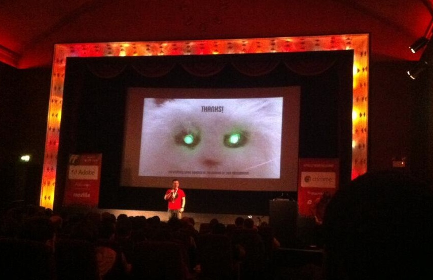

The Rise of
JavaScript Robotics
Or
I for one welcome our
new robot overlords
Created by Alex Potsides / 9425778 / @achingbrain
WAT?
NodeBots!
What's a NodeBot?
node.js + robots
NodeCopters
Are flight capable NodeBots

NodeCopter
- Flying WiFi hotspot
- REST interface
- Can access camera data
JavaScript, SRSLY?!
I though that was just a toy language.
Isn't it just for web pages?
JavaScript
Lightweight
Easy to pick up
Fast feedback
Node.js
Headless JavaScript runtime
Chrome V8 under the hood
Event driven, non-blocking IO
C++ modules
Hardware
WARNING!
Hardware is hard
Hard to debug
Unreliable
Might just cut your arm off
The normal rules do not apply
(Good luck with those unit tests)
Reality has a terrible API
- Motors move too much
- Servos don't move enough
- Sometimes you have to add $FUDGE_FACTOR*
* = $FUDGE_FACTOR === 5, fact.
Nodeboteers
27th July 2013
Demo!
Great!
So I can move a servo and turn some LEDs on.
Now what?
Build Cat does the conference circuit
Full Frontal, 2013
What else?
All this talking makes me thirsty
B.A.R.B.A.R.A.
Build A Robot, Brew A Real Ale
A micro-services approach
The idea
Constant temperature key to repeatable brew
Measure temperature
Constant temperature adjustments
Hardware
Rasperry-Pi
BeagleBone Black
2x Arduinos
Temperature Sensor
Aquarium Heater
Micro services
Single-responsibility processes
- Temperature sensor
- Heater
- Database
NodeBots of London
Monthly meetup hosted by uSwitch and TableFlip
Next meetup: 26th February